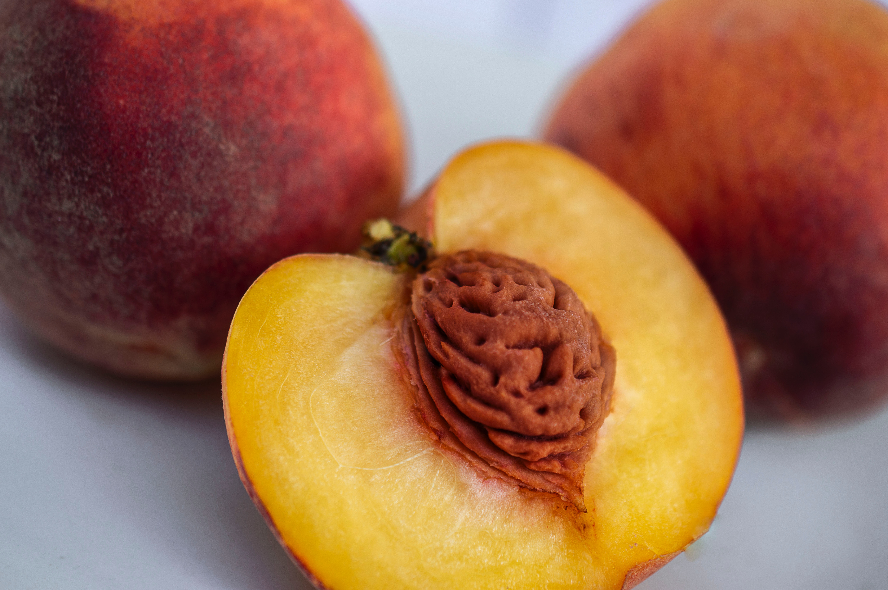

Here we go

“-The Peach State” is Georgia’s nickname
“-The World’s Largest Peach Cobbler” is made every year in Georgia. The cobbler measures 11 feet by 5 feet.
-August is National Peach Month

-Avocados have higher levels of potassium than bananas.
-The skin and pit can be harmful, and even toxic, to cats and dogs.
-It is a trending substitute for butter.
-Plums can be as large as a baseball or a small as a cherry when ripe.
-Plum extracts can kill aggressive breast cancer cells without harming the surrounding healthy cells.
-February 12th is National Plum Pudding Day.
-Your body can only detoxify a small amount of cyanide; eating too many apricot seeds or kernels may be hazardous to your health.
-The apricot is a member of the rose family and is a close relative of almonds.
-January 9th is National Apricot Day.